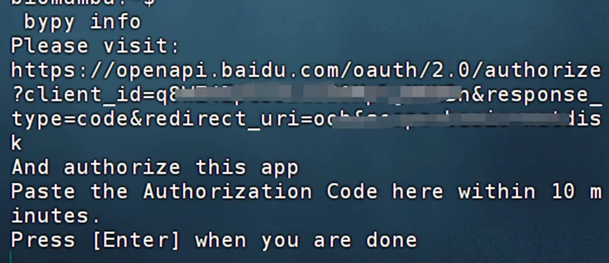
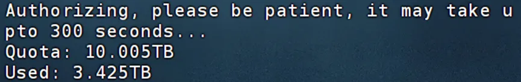
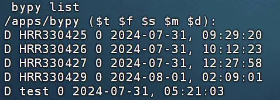
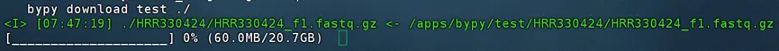

Linux也有百度云喔~
原文：https://mp.weixin.qq.com/s?__biz=MzAwMzIzOTk5OQ==&mid=2247521009&idx=1&sn=06a9e3d1c7564992399ca1e4055dc293&chksm=9b3ceba1ac4b62b7d39ce16b55b272599a3f1491977dc9feb64ac114b8c0d7a0961603c0d556#rd 合集：答读者问
一、写在前面
经常有粉丝向我抱怨，为什么每次发放资料都用百度云，自己下载了一遍之后还得再上传一遍服务器才能分析。其实大家大可不必这么周转，百度云也有Linux 的发行版本，利用python包bypy 来管理/传输百度云盘资源也很方便(别问我为什么不用阿里云、腾讯云。。。，我用了这些还会有人提出相同的问题)。 如果你对下面的教程比较迷茫，那么你可以先行学习Linux教程：十小时学会Linux 生信Linux及服务器使用技巧 如果你的计算机不足以支持下面流程的计算，可按需选用适合自己的计算资源：共享(经济实惠)：有root权限的共享服务器,报我名字立减200￥独享(省电省心)：生信分析不求人
实体(稳定高效)：配置一个心仪的工作站(硬件+环境配置)
访问链接：https://biomamba.xiyoucloud.net/
更多内容可咨询客服微信[Biomamba_kefu]

二、通过bypy使用百度云
首先需要确保你的Linux环境中有python(生信Python速查手册)我这里的版本是3.10.0。
-
-
- *
-
# 安装bypypip install bypy# 配置账号密码：bypy info
会返回以下页面：

用浏览器访问上面提供的网址，登录自己的百度云盘账号： 授权后会返回授权码，复制授权码：回到终端粘贴授权码，回车后会自动配置百度网盘账号密码及初始设置，返回百度云盘的存储信息，下面的信息会与各位的windows客户端相一致：
配置好之后，在Windows客户端会多出这么一个文件夹，这个文件夹就是Linux和windows交换文件的桥梁： 在Linux终端使用百度云，大家就得使用命令行啦，最常用的是：1、查看目录下包含哪些内容：*
bypy list

/apps/bypy/即为bypy访问的根目录
2、上传文件
*
bypy upload /path/to/local/file /remote/path
3、下载文件
*
bypy download /remote/path /path/to/local/file
假如我在“我的网盘/我的应用数据/bypy”下有一个名为test的文件夹，我希望把它下载到我的家目录中，那么我应该：
*
bypy download test /home/biomamba
下载时也会有进度条：

大文件建议大家挂载在后台下载：程序可以自己跑的，不用盯着
更多用法：